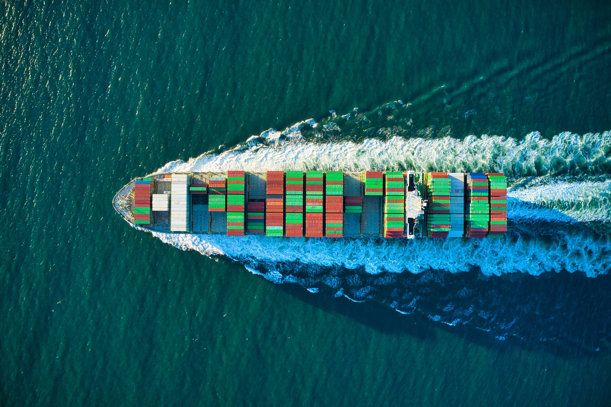
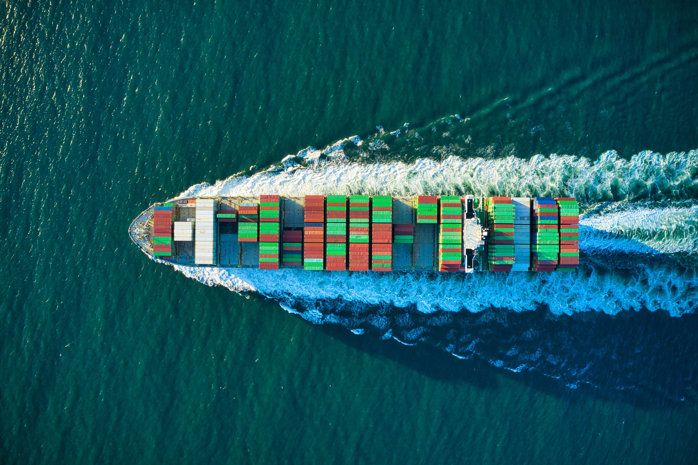

International Edible Oil & Commodity Brokerage
Import • Export • Physical Trade Facilitation • Broker-Only Execution
KNG Commodities LLP is a Mumbai-based international commodity brokerage firm, established in the year 2017, with a focused mandate to facilitate physical trade in edible oils and agri-commodities.
The firm was founded to serve as a neutral, execution-driven intermediary between buyers and sellers operating across domestic and international markets. From its inception, KNG Commodities LLP has followed a conservative and broker-centric operating philosophy — prioritising contract discipline, transparency and reliable trade execution.
Unlike proprietary trading firms, KNG Commodities LLP does not engage in speculative positions, inventory holding, physical storage or logistics ownership. This ensures complete neutrality in every transaction and allows the firm to align its interests equally with both counterparties involved in a trade.
Over the years, the firm has worked with a wide spectrum of market participants including domestic refiners, processors, importers, exporters and multinational trading houses. These relationships have been built steadily through consistent execution, professional conduct and an in-depth understanding of physical commodity markets.
KNG Commodities LLP has actively facilitated trade with organisations such as Viterra India, Bunge India, Adani Group, Tata Group and COFCO International, along with several established regional and local market participants. The firm’s experience spans bulk vessel shipments, containerised cargoes and cross-border physical trade across multiple origins and destinations.
Our core strength lies in our ability to translate contractual terms into smooth physical execution — ensuring that quality parameters, delivery terms, inspection procedures and documentation requirements are clearly aligned between buyers and sellers.
KNG Commodities LLP believes that a broker’s reputation is built not on volume claims, but on consistency, discretion and long-term credibility within the market.
Nimesh Ashok Galia, Founder & Director of KNG Commodities LLP, brings over 20+ years of hands-on experience in the edible oil and agri-commodity trading sector.
His professional journey spans domestic physical markets, bulk vessel imports, exports, containerised shipments and cross-border trade execution. Over the course of his career, he has worked closely with refiners, processors, multinational trading houses, inspection agencies and logistics providers.
This extensive exposure has enabled a deep understanding of market structure, pricing mechanisms, contract specifications, quality parameters and counterparty risk management. His approach to trading emphasises disciplined execution, clear documentation and strict adherence to contractual terms.
Under his leadership, KNG Commodities LLP operates with a strong compliance orientation and a broker-only execution model. The firm does not assume financial, operational or performance risk, ensuring clarity of roles and responsibilities in every transaction.
The leadership philosophy at KNG Commodities LLP is rooted in sustainability, professionalism and long-term market relationships rather than short-term trading gains.
KNG Commodities LLP facilitates trade in globally traded edible oils under internationally recognised contractual frameworks such as FOSFA and ANEC. Product quality parameters, tolerances and inspection clauses are agreed directly between buyer and seller prior to execution.

High-volume global trade executed under FOSFA 80/81 contracts.
Crude Palm Oil is one of the most actively traded edible oils globally. KNG Commodities LLP facilitates trade sourced from established producing origins with strict adherence to contractual terms.
| Contract | FOSFA 80 / 81 |
|---|---|
| FFA | Max 4.5% |
| Moisture & Impurities | Max 0.50% |

Refined palm oil for edible and industrial applications.
RBD Palmolein is traded with strict quality benchmarks and internationally recognised specifications.
| FFA | Max 0.1% |
|---|---|
| Moisture & Impurities | Max 0.1% |
| Iodine Value | Min 56 |
| Melting Point | Max 24°C |
| Colour (Lovibond) | Max 3 Red |

Domestic & international trade under FOSFA 54 / ANEC 81.
Soybean oil trades are executed with clear contractual alignment and internationally accepted parameters.
| Contract | FOSFA 54 / ANEC 81 |
|---|---|
| FFA | Max 1.0% |
| Moisture & Volatile | Max 0.20% |
| Insoluble Impurities | Max 0.10% |

Premium sunflower oil traded under FOSFA standards.
Sunflower oil is facilitated with consistent quality benchmarks and mutually agreed inspection parameters.
| Contract | FOSFA 54 |
|---|---|
| FFA | Basis 2% (allowance up to 3%) |
| Moisture & Impurities | Max 0.50% |
India is one of the largest consumers and importers of edible oils globally. Structural factors such as limited domestic oilseed production, population growth, rising per-capita consumption and expansion of the food processing industry have resulted in a sustained dependence on imports.
Over the last decade, India’s edible oil imports have shown a steady upward trend. Palm oil, soybean oil and sunflower oil together account for the majority of total volumes imported annually. These imports play a critical role in balancing domestic supply-demand dynamics and stabilising prices across consumer and industrial segments.
As trade volumes grow, execution complexity also increases — from vessel scheduling and port congestion to inspection, sampling and discharge coordination. This is where disciplined brokerage and clear contract alignment become essential.
India’s annual edible oil consumption is estimated at approximately 23–25 million metric tonnes. Domestic production contributes only a portion of this requirement, making imports structurally indispensable.
Any disruption in global supply chains, freight availability or port operations directly impacts domestic pricing and availability — reinforcing the importance of efficient import execution.
India’s edible oil imports are handled through a network of strategically located ports. Western coast ports account for the majority of volumes due to proximity to major producing origins and refinery clusters.
Annual port-wise volumes vary based on freight economics, refinery demand, infrastructure availability and congestion patterns. Execution planning at these ports directly impacts turnaround times and demurrage exposure.
 


In a high-volume, time-sensitive import environment, brokers act as the coordination layer between buyers, sellers, inspection agencies, shipping lines and port operators.
KNG Commodities LLP focuses on ensuring that contractual terms translate accurately into physical execution — covering quality parameters, shipment windows, inspection protocols and documentation flow.
Our role is strictly limited to trade facilitation. We do not take ownership of goods, assume logistics responsibility or provide financial guarantees.
KNG Commodities LLP
International Edible Oil & Commodity Brokerage
A-Wing, Unit No. 706, Jaswanti Allied Business Centre,
Premises CSL, Kachpada, Ramchandra Lane Extension Road,
Malad West, Mumbai – 400064, Maharashtra, India
GSTIN: 27AASFK4574H1ZR
Founder & Director: Nimesh Ashok Galia
📞 +91 98200 29262
Operations Head: Prasanna Gadre
📞 +91 97636 33463
✉️ kngcommodities@gmail.com
✉️ kngprasanna@gmail.com